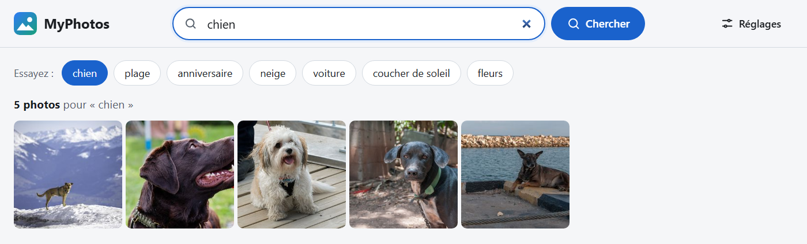

Tapez « chien », et toutes vos photos de chiens apparaissent. MyPhotos fonctionne entièrement sur votre ordinateur : vos photos ne sont envoyées nulle part, et elles ne sont jamais modifiées.

La recherche « chien » (photos d'exemple du domaine public).
1Installer
Téléchargez MyPhotos.exe depuis github.com/glenac/MyPhotos, rubrique Releases.
Rangez-le où vous voulez, par exemple sur le Bureau. Il n'y a rien d'autre à installer.
Double-cliquez dessus.
Si Windows affiche « Windows a protégé votre ordinateur » : cliquez sur Informations complémentaires, puis sur Exécuter quand même.
2Premier lancement
MyPhotos s'ouvre dans votre navigateur et vous guide en trois étapes :
Votre ordinateur : MyPhotos choisit le moteur de reconnaissance « Conseillé pour cet ordinateur ». Cliquez sur Télécharger, puis sur Continuer : le téléchargement se poursuit pendant ce temps.
Vos photos : cliquez sur Ajouter à côté du dossier Images, ou sur Ajouter un dossier… pour en choisir un autre. Puis Continuer.
Analyse : MyPhotos regarde chaque photo une fois. Cliquez sur Commencer à chercher sans attendre la fin.
Internet ne sert qu'une fois, pour télécharger le moteur (de 750 Mo à 2,1 Go). L'analyse prend de quelques minutes à quelques heures, selon le nombre de photos et l'ordinateur.
3Chercher
Tapez ce que vous cherchez dans la barre « Que cherchez-vous ? », puis appuyez sur Entrée ou cliquez sur Chercher. Par exemple : plage, neige, gâteau d'anniversaire, coucher de soleil.
Une petite phrase marche aussi : « chien sur la plage ».
Les photos les plus sûres viennent d'abord. Plus bas, Moins sûres montre celles qui correspondent peut-être.
Sans rien taper, toutes vos photos s'affichent, des plus récentes aux plus anciennes.
4La visionneuse
Cliquez sur une photo pour l'agrandir.
Les flèches, ou les touches ← et → du clavier, passent à la photo précédente ou suivante.
Ouvrir avec la visionneuse Windows ouvre la photo dans le logiciel habituel de Windows.
Afficher dans le dossier montre où se trouve le fichier.
Fermer, ou la touche Échap, ramène aux résultats.
5Ajouter un dossier
Cliquez sur Réglages, en haut à droite.
Dans Vos dossiers de photos, cliquez sur Ajouter un dossier…, choisissez le dossier dans la fenêtre qui s'ouvre et validez. MyPhotos analyse aussitôt ses photos.
Retirer enlève un dossier de MyPhotos sans supprimer aucune photo.
Les nouvelles photos de vos dossiers sont repérées toutes seules, à chaque démarrage puis toutes les heures. Chercher les nouvelles photos maintenant le fait tout de suite.
En cas de souci
« MyPhotos est arrêté », ou la page ne répond plus : MyPhotos s'arrête tout seul quelques minutes après la fermeture de sa page. Double-cliquez de nouveau sur MyPhotos.exe.
Le téléchargement échoue : vérifiez la connexion à Internet, puis cliquez sur Réessayer ; il reprend où il en était.
Une photo reste introuvable : essayez un autre mot ou une petite phrase, regardez dans Moins sûres, et vérifiez dans le bandeau du haut que l'analyse est terminée.
L'ordinateur est lent pendant l'analyse : cliquez sur Pause dans le bandeau, puis sur Reprendre plus tard.
Pour arrêter MyPhotos : Réglages, puis Arrêter MyPhotos.
Ce que MyPhotos retient (index, miniatures, moteur) reste sur votre ordinateur, dans le dossier %LOCALAPPDATA%\MyPhotos. Pour le désinstaller : arrêtez-le, puis supprimez MyPhotos.exe et ce dossier. Vos photos, elles, ne sont jamais modifiées, déplacées ni supprimées.